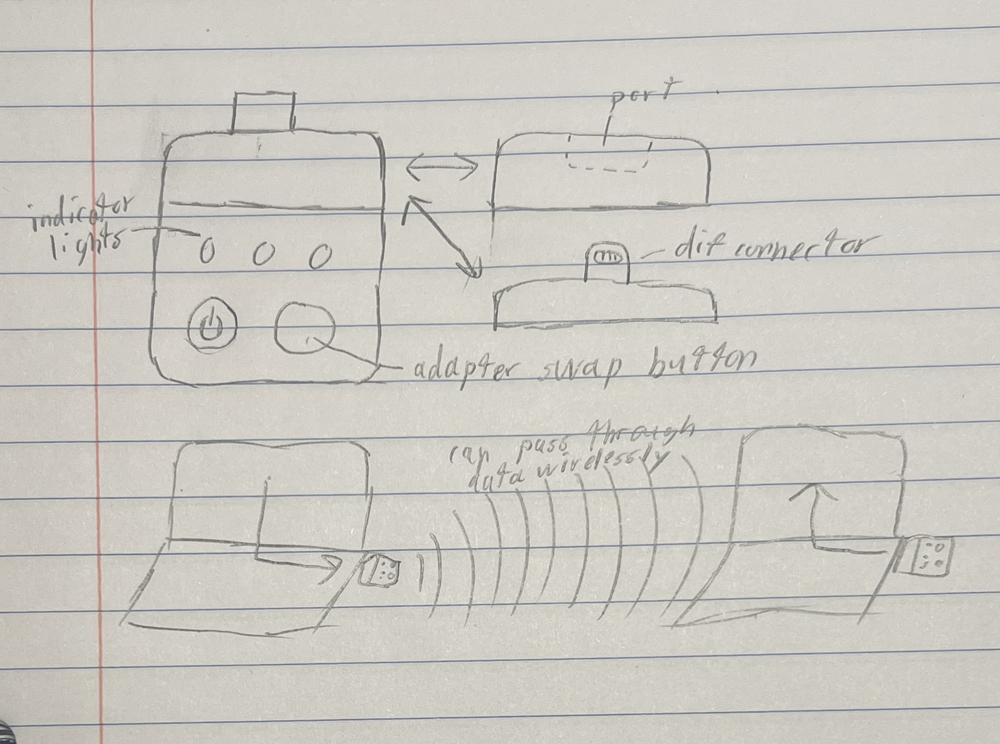
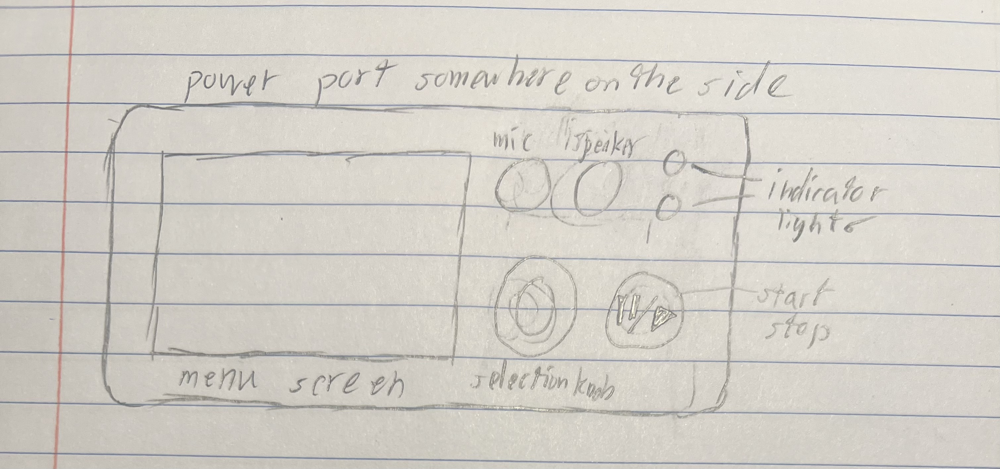
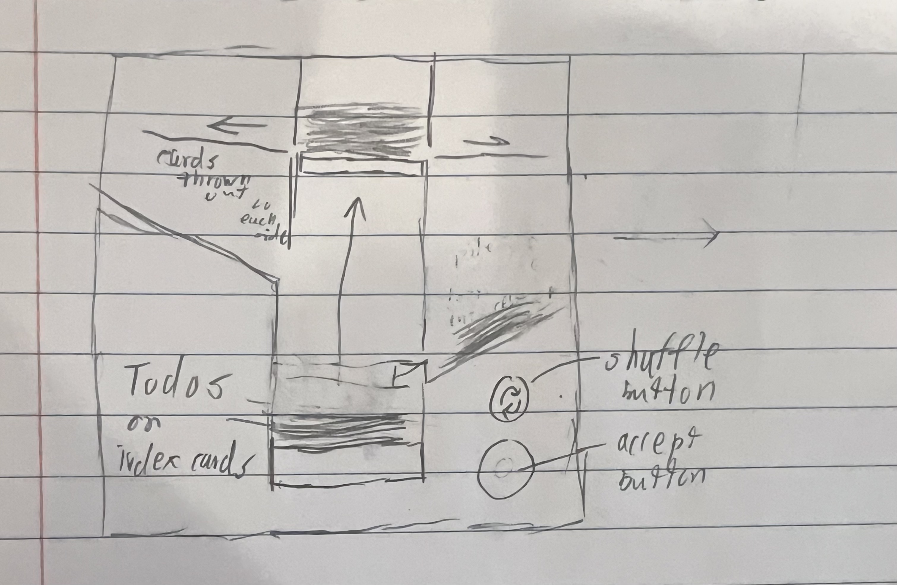

<div class="textcontainer">
<br></br>
<a href="html_experimentation/index.html">see some html experimentation</a>
<br>
<br>
<br>
<h1>Week 1: Final Project Proposal</h3>
<p class = "margin"></p>
Here are some Ideas for a final project
<p class = "margin"></p>
<h2>Idea 1 : Universal and Wireless Plug/Ports</h4>
<p class = "margin"></p>
a set of 2 (or more) devices which can communicate with each other and exchangable plugs/ports:<br>
 - could pass through data from one device to the other to wirelessly connect any 2 devices<br>
 - the indicator lights could show connection strength or battery<br>
 - battery could be charged through the exchangable port/plug<br>
<p></p>
<p class = "margin"></p>
<h2>Idea 2: Music Helper</h4>
<p class = "margin"></p>
a small handheld device to provide various assisstance while playing music<br>
 - metronome:<br>
  - via clicks on speaker<br>
  - or flashes of light<br>
  - and maybe a vibrator<br>
  - bpm could default to the selected song's bpm<br>
  - volume/brightness could be used to indicate the meter (ie loud, quiet, quiet)<br>
  - clicks could be mapped to actual notes<br>
 - pitch pipe/tuner:<br>
  - light could indicate low, good, high with blue, off, and red<br>
   - brightness could indicate distance<br>
  - could be connected to a song to provide live tuning<br>
 - use the knob to select a song, bpm, or pitch, press in to confirm<br>
 - could give audio playback for accompaniment or general reference<br>
 - other button ideas:<br>
  - set & load checkpoint<br>
  - restart<br>
  - back a measure<br>
<p></p>
<p class = "margin"></p>
<h2>Idea 3: Bartering Todo List</h4>
<p class = "margin"></p>
a glorified card shuffler of Todos<br>
 - activates at some set time of the day<br>
 - while activated & not recently interacted with, will shine bright blue lights to annoy the owner<br>
 - once activated can shuffle any number of times and then accept a card <br>
 - accepted cards can then be confirmed and (ideally) worked on by user <br>
 - OR placed back inside in exchange for accepting 2 cards in a row in its place (up to 3 in a row)<br>
 - once a card is confirmed, sets a timer for X minutes to work on it, after which the card is returned or discarded<br>
<p></p>
</div>